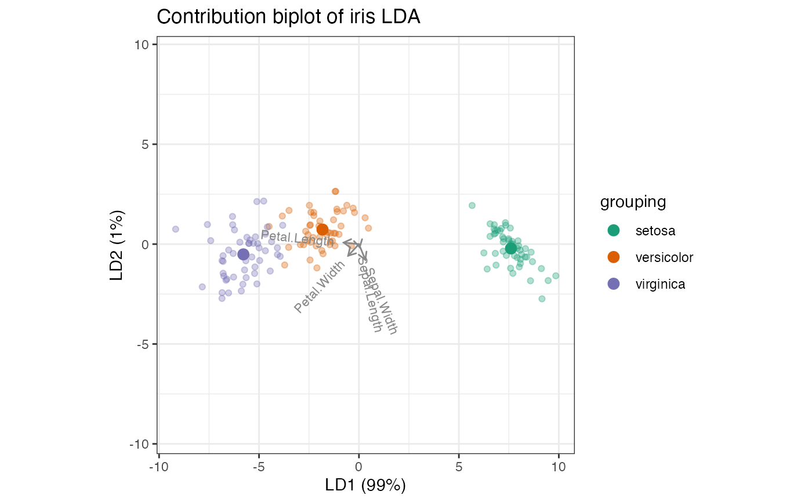
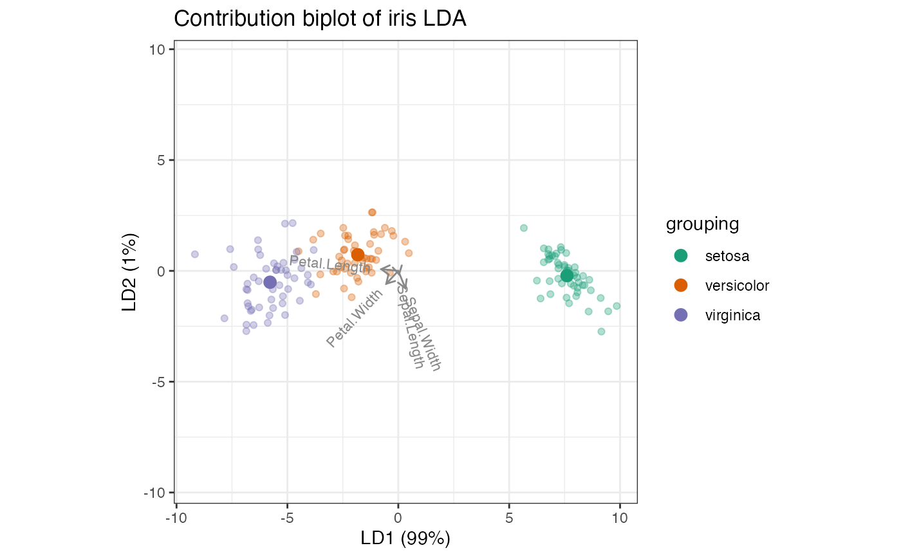

This function replicates MASS::lda() with options to retain
elements useful to the tbl_ord class and biplot calculations.
lda_ord(x, ...)
# S3 method for class 'formula'
lda_ord(formula, data, ..., subset, na.action)
# S3 method for class 'data.frame'
lda_ord(x, ...)
# S3 method for class 'matrix'
lda_ord(x, grouping, ..., subset, na.action)
# Default S3 method
lda_ord(
x,
grouping,
prior = proportions,
tol = 1e-04,
method = c("moment", "mle", "mve", "t"),
CV = FALSE,
nu = 5,
...,
ret.x = FALSE,
ret.grouping = FALSE,
axes.scale = "unstandardized"
)
# S3 method for class 'lda_ord'
predict(
object,
newdata,
prior = object$prior,
dimen,
method = c("plug-in", "predictive", "debiased"),
...
)
# S3 method for class 'lda_ord'
model.frame(formula, ...)Arguments
- x
(required if no formula is given as the principal argument.) a matrix or data frame or Matrix containing the explanatory variables.
- ...
arguments passed to or from other methods.
- formula
A formula of the form
groups ~ x1 + x2 + ...That is, the response is the grouping factor and the right hand side specifies the (non-factor) discriminators.- data
An optional data frame, list or environment from which variables specified in
formulaare preferentially to be taken.- subset
An index vector specifying the cases to be used in the training sample. (NOTE: If given, this argument must be named.)
- na.action
A function to specify the action to be taken if
NAs are found. The default action is for the procedure to fail. An alternative isna.omit, which leads to rejection of cases with missing values on any required variable. (NOTE: If given, this argument must be named.)- grouping
(required if no formula principal argument is given.) a factor specifying the class for each observation.
- prior
the prior probabilities of class membership. If unspecified, the class proportions for the training set are used. If present, the probabilities should be specified in the order of the factor levels.
- tol
A tolerance to decide if a matrix is singular; it will reject variables and linear combinations of unit-variance variables whose variance is less than
tol^2.- method
"moment"for standard estimators of the mean and variance,"mle"for MLEs,"mve"to usecov.mve, or"t"for robust estimates based on a \(t\) distribution.- CV
If true, returns results (classes and posterior probabilities) for leave-one-out cross-validation. Note that if the prior is estimated, the proportions in the whole dataset are used.
- nu
degrees of freedom for
method = "t".- ret.x, ret.grouping
Logical; whether to retain as attributes the data matrix (
x) and the class assignments (grouping) on which LDA is performed. Methods likepredict()access these objects by name in the parent environment, and retaining them as attributes prevents errors that arise if these objects are reassigned.- axes.scale
Character string indicating how to left-transform the
scalingvalue when rendering biplots usingggbiplot(). Options include"unstandardized","standardized", and"contribution".- object
object of class
"lda"- newdata
data frame of cases to be classified or, if
objecthas a formula, a data frame with columns of the same names as the variables used. A vector will be interpreted as a row vector. If newdata is missing, an attempt will be made to retrieve the data used to fit theldaobject.- dimen
the dimension of the space to be used. If this is less than
min(p, ng-1), only the firstdimendiscriminant components are used (except formethod="predictive"), and only those dimensions are returned inx.
Value
Output from MASS::lda() with an additional preceding class
'lda_ord' and up to three attributes:
the input data
x, ifret.x = TRUEthe class assignments
grouping, ifret.grouping = TRUEif the parameter
axes.scaleis not 'unstandardized', a matrixaxes.scalethat encodes the transformation of the row space
Details
Linear discriminant analysis relies on an eigendecomposition of the product \(W^{-1}B\) of the inverse of the within-class covariance matrix \(W\) by the between-class covariance matrix \(B\). This eigendecomposition can be motivated as the right (\(V\)) half of the singular value decomposition of the matrix of Mahalanobis distances between the cases after "sphering" (linearly transforming them so that the within-class covariance is the identity matrix). LDA are not traditionally represented as biplots, with some exceptions (Gardner & le Roux, 2005; Greenacre, 2010, p. 109–117).
LDA is implemented as MASS::lda() in the MASS package, in which the
variables are transformed by a sphering matrix \(S\) (Venables & Ripley,
2003, p. 331–333). The returned element scaling contains the
unstandardized discriminant coefficients, which define the discriminant
scores of the cases and their centroids as linear combinations of the
original variables.
The discriminant coefficients constitute one of several possible choices of
axes for a biplot representation of the LDA. The slightly modified function
lda_ord() provides additional options:
The standardized discriminant coefficients are obtained by (re)scaling the coefficients by the variable standard deviations. These coefficients indicate the contributions of the variables to the discriminant scores after controlling for their variances (Orlov, 2013).
The variables' contributions to the Mahalanobis variance along each discriminant axis are obtained by transforming the coefficients by the inverse of the sphering matrix \(S\). Because the contribution biplot derives from the eigendecomposition of the Mahalanobis distance matrix, the projections of the centroids and cases onto the variable axes approximate their variable values after centering and sphering (Greenacre, 2013).
References
Gardner S & le Roux NJ (2005) "Extensions of Biplot Methodology to Discriminant Analysis". Journal of Classification 22(1): 59–86. doi:10.1007/s00357-005-0006-7 https://link.springer.com/article/10.1007/s00357-005-0006-7
Greenacre MJ (2010) Biplots in Practice. Fundacion BBVA, ISBN: 978-84-923846. https://www.fbbva.es/microsite/multivariate-statistics/biplots.html
Venables WN & Ripley BD (2003) Modern Applied Statistics with S, Fourth Edition. Springer Science & Business Media, ISBN: 0387954570, 9780387954578. https://www.mimuw.edu.pl/~pokar/StatystykaMgr/Books/VenablesRipley_ModernAppliedStatisticsS02.pdf
Orlov K (2013) Answer to "Algebra of LDA. Fisher discrimination power of a variable and Linear Discriminant Analysis". CrossValidated, accessed 2019-07-26. https://stats.stackexchange.com/a/83114/68743
Greenacre M (2013) "Contribution Biplots". Journal of Computational and Graphical Statistics, 22(1): 107–122. https://www.tandfonline.com/doi/full/10.1080/10618600.2012.702494
See also
MASS::lda(), from which lda_ord() is adapted
Examples
# Anderson iris species data centroid
iris_centroid <- t(apply(iris[, 1:4], 2, mean))
# unstandardized discriminant coefficients: the discriminant axes are linear
# combinations of the centered variables
iris_lda <- lda_ord(iris[, 1:4], iris[, 5], axes.scale = "unstandardized")
# linear combinations of centered variables
print(sweep(iris_lda$means, 2, iris_centroid, "-") %*% get_cols(iris_lda))
#> LD1 LD2
#> setosa 7.607600 -0.2151330
#> versicolor -1.825049 0.7278996
#> virginica -5.782550 -0.5127666
# discriminant centroids
print(get_rows(iris_lda, elements = "active"))
#> LD1 LD2
#> setosa 7.607600 -0.2151330
#> versicolor -1.825049 0.7278996
#> virginica -5.782550 -0.5127666
# unstandardized coefficient LDA biplot
iris_lda %>%
as_tbl_ord() %>%
augment_ord() %>%
mutate_rows(
species = grouping,
discriminant = ifelse(.element == "active", "centroid", "case")
) %>%
ggbiplot() +
theme_bw() +
geom_rows_point(aes(
color = grouping,
size = discriminant, alpha = discriminant
)) +
geom_cols_vector(color = "#888888") +
geom_cols_text_radiate(aes(label = name), size = 3) +
scale_color_brewer(type = "qual", palette = 2) +
ggtitle("Unstandardized coefficient biplot of iris LDA") +
expand_limits(y = c(-3, 5))
#> Warning: Using size for a discrete variable is not advised.
#> Warning: Using alpha for a discrete variable is not advised.
# standardized discriminant coefficients: permit comparisons across the
# variables
iris_lda <- lda_ord(iris[, 1:4], iris[, 5], axes.scale = "standardized")
# standardized variable contributions to discriminant axes
iris_lda %>%
as_tbl_ord() %>%
augment_ord() %>%
fortify(.matrix = "cols") %>%
dplyr::mutate(variable = name) %>%
tidyr::gather(discriminant, coefficient, LD1, LD2) %>%
ggplot(aes(x = discriminant, y = coefficient, fill = variable)) +
geom_bar(position = "dodge", stat = "identity") +
labs(y = "Standardized coefficient", x = "Linear discriminant") +
theme_bw() +
coord_flip()
 # standardized coefficient LDA biplot
iris_lda %>%
as_tbl_ord() %>%
augment_ord() %>%
mutate_rows(
species = grouping,
discriminant = ifelse(.element == "active", "centroid", "case")
) %>%
ggbiplot() +
theme_bw() +
geom_rows_point(aes(
color = grouping,
size = discriminant, alpha = discriminant
)) +
geom_cols_vector(color = "#888888") +
geom_cols_text_radiate(aes(label = name), size = 3) +
scale_color_brewer(type = "qual", palette = 2) +
ggtitle("Standardized coefficient biplot of iris LDA") +
expand_limits(y = c(-2, 3))
#> Warning: Using size for a discrete variable is not advised.
#> Warning: Using alpha for a discrete variable is not advised.
# variable contributions (de-sphered discriminant coefficients): recover the
# inner product relationship with the centered class centroids
iris_lda <- lda_ord(iris[, 1:4], iris[, 5], axes.scale = "contribution")
# symmetric square root of within-class covariance
C_W_eig <- eigen(cov(iris[, 1:4] - iris_lda$means[iris[, 5], ]))
C_W_sqrtinv <-
C_W_eig$vectors %*% diag(1/sqrt(C_W_eig$values)) %*% t(C_W_eig$vectors)
# product of matrix factors (scores and loadings)
print(get_rows(iris_lda, elements = "active") %*% t(get_cols(iris_lda)))
#> [,1] [,2] [,3] [,4]
#> setosa 0.3061785 2.593874 -5.861269 -3.9959956
#> versicolor -0.1774657 -1.154286 1.457859 0.5653316
#> virginica -0.1287128 -1.439587 4.403411 3.4306640
# "asymmetric" square roots of Mahalanobis distances between variables
print(sweep(iris_lda$means, 2, iris_centroid, "-") %*% C_W_sqrtinv)
#> [,1] [,2] [,3] [,4]
#> setosa 0.3103442 2.629165 -5.941014 -4.0503629
#> versicolor -0.1798802 -1.169991 1.477693 0.5730232
#> virginica -0.1304640 -1.459174 4.463321 3.4773397
# contribution LDA biplot
iris_lda %>%
as_tbl_ord() %>%
augment_ord() %>%
mutate_rows(
species = grouping,
discriminant = ifelse(.element == "active", "centroid", "case")
) %>%
ggbiplot() +
theme_bw() +
geom_rows_point(aes(
color = grouping,
size = discriminant, alpha = discriminant
)) +
geom_cols_vector(color = "#888888") +
geom_cols_text_radiate(aes(label = name), size = 3) +
scale_color_brewer(type = "qual", palette = 2) +
ggtitle("Contribution biplot of iris LDA") +
expand_limits(y = c(-2, 3.5))
#> Warning: Using size for a discrete variable is not advised.
#> Warning: Using alpha for a discrete variable is not advised.

# standardized coefficient LDA biplot
iris_lda %>%
as_tbl_ord() %>%
augment_ord() %>%
mutate_rows(
species = grouping,
discriminant = ifelse(.element == "active", "centroid", "case")
) %>%
ggbiplot() +
theme_bw() +
geom_rows_point(aes(
color = grouping,
size = discriminant, alpha = discriminant
)) +
geom_cols_vector(color = "#888888") +
geom_cols_text_radiate(aes(label = name), size = 3) +
scale_color_brewer(type = "qual", palette = 2) +
ggtitle("Standardized coefficient biplot of iris LDA") +
expand_limits(y = c(-2, 3))
#> Warning: Using size for a discrete variable is not advised.
#> Warning: Using alpha for a discrete variable is not advised.
# variable contributions (de-sphered discriminant coefficients): recover the
# inner product relationship with the centered class centroids
iris_lda <- lda_ord(iris[, 1:4], iris[, 5], axes.scale = "contribution")
# symmetric square root of within-class covariance
C_W_eig <- eigen(cov(iris[, 1:4] - iris_lda$means[iris[, 5], ]))
C_W_sqrtinv <-
C_W_eig$vectors %*% diag(1/sqrt(C_W_eig$values)) %*% t(C_W_eig$vectors)
# product of matrix factors (scores and loadings)
print(get_rows(iris_lda, elements = "active") %*% t(get_cols(iris_lda)))
#> [,1] [,2] [,3] [,4]
#> setosa 0.3061785 2.593874 -5.861269 -3.9959956
#> versicolor -0.1774657 -1.154286 1.457859 0.5653316
#> virginica -0.1287128 -1.439587 4.403411 3.4306640
# "asymmetric" square roots of Mahalanobis distances between variables
print(sweep(iris_lda$means, 2, iris_centroid, "-") %*% C_W_sqrtinv)
#> [,1] [,2] [,3] [,4]
#> setosa 0.3103442 2.629165 -5.941014 -4.0503629
#> versicolor -0.1798802 -1.169991 1.477693 0.5730232
#> virginica -0.1304640 -1.459174 4.463321 3.4773397
# contribution LDA biplot
iris_lda %>%
as_tbl_ord() %>%
augment_ord() %>%
mutate_rows(
species = grouping,
discriminant = ifelse(.element == "active", "centroid", "case")
) %>%
ggbiplot() +
theme_bw() +
geom_rows_point(aes(
color = grouping,
size = discriminant, alpha = discriminant
)) +
geom_cols_vector(color = "#888888") +
geom_cols_text_radiate(aes(label = name), size = 3) +
scale_color_brewer(type = "qual", palette = 2) +
ggtitle("Contribution biplot of iris LDA") +
expand_limits(y = c(-2, 3.5))
#> Warning: Using size for a discrete variable is not advised.
#> Warning: Using alpha for a discrete variable is not advised.
